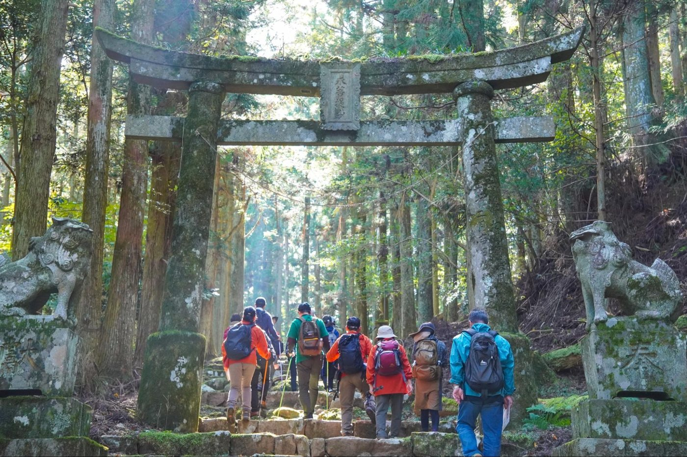
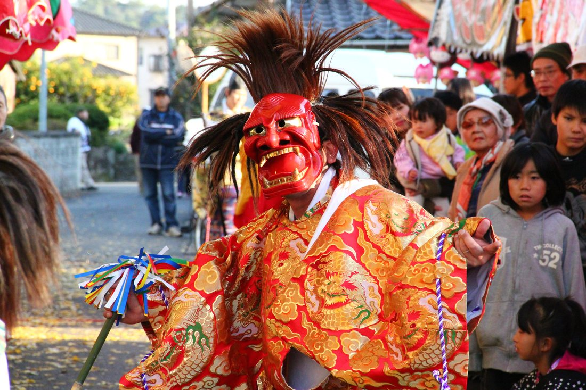
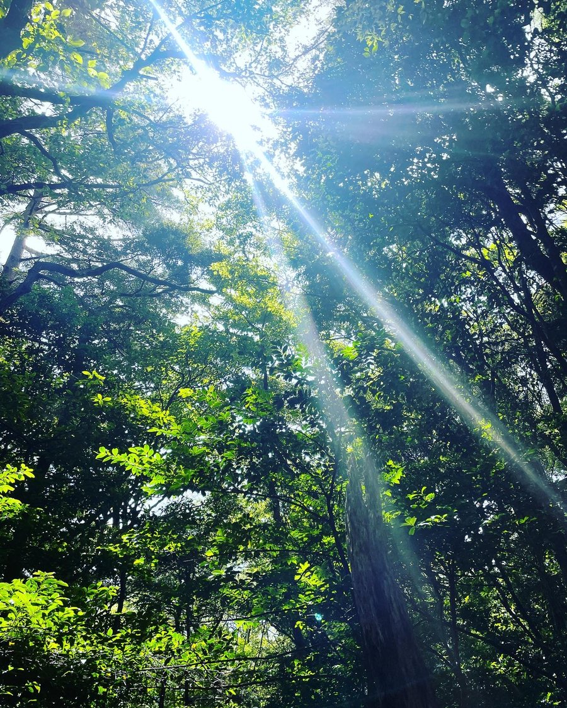
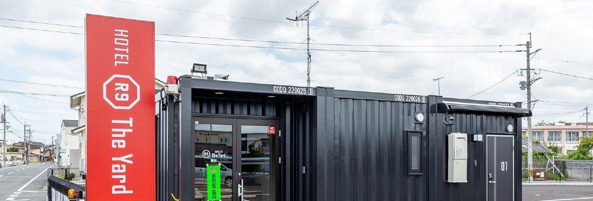
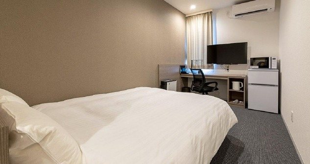
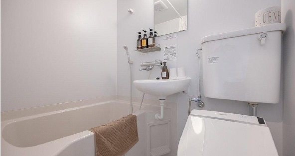
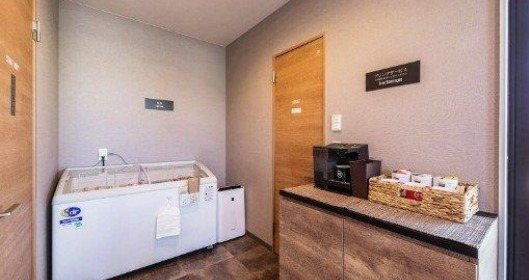

Sacred nature and deep focus. Mt. Kubote looms over everything here, a mountain with a long history in ascetic training, and your days will split between coworking, kagura dance performances, and a tent sauna by the river.
Three nights, four days, and an itinerary that's actually been thought through: free coworking time at ZigZag, a Kagura performance the first night, an optional morning of tent sauna or a real-estate tour, and a full day up on Mt. Kubote, the old center of mountain asceticism just a short drive from HOTEL R9.



Getting around is covered. Every activity on this schedule is reached by shuttle bus or taxi, arranged for you — no transport costs, no logistics to figure out on your own.
HOTEL R9 The Yard is something you don't see often — private rooms built out of shipping containers. The exterior looks the part, but inside it's comfortable enough that you'll forget you're staying in a container at all.

Every room has a Simmons double bed (W140 × L195), a desk, a chair, and Wi-Fi — a private space with what you need to actually unwind after a full day. It's more comfortable than you'd expect from a container: not camping, just a small, well laid-out room built for getting work done and then resting.


